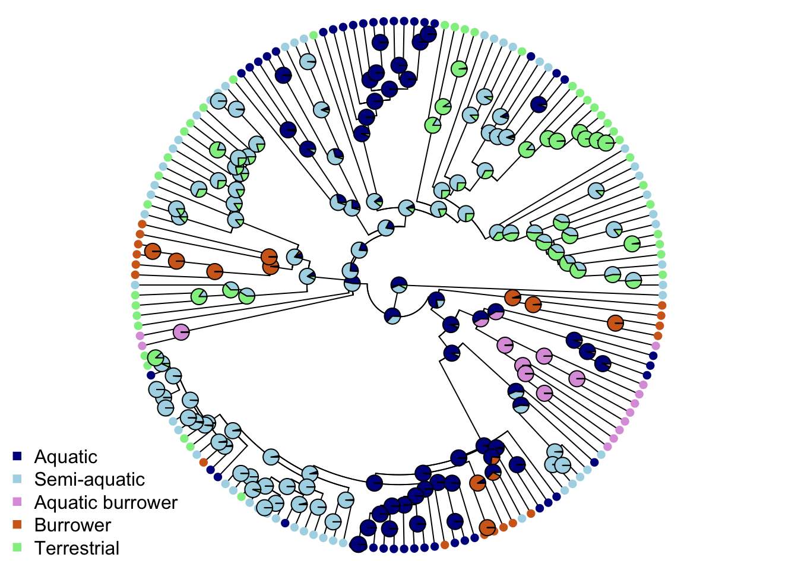

Chapter 10 Beyond simple macroevolutionary models
The aims of this exercise are to learn how to use R to fit slightly more complex macroevolutionary models.
Our question here still revolves around the snake head shape data. In 08-ModelsContinuous we fitted simple Brownian Motion (BM) and Ornstein-Uhlenbeck (OU) models to the head length data. We found that the OU model was a better fit, but we didn’t account for any of the limitations of the BM or OU models (see Primer). In the both models we only allowed head length to have one rate of evolution across the tree, and in the OU model we only fit a single optimum. We can extend these models by relaxing these assumptions.
In 09-ModelsDiscrete we fitted three simple models of evolution to discrete data to see how ecomorph changed across the tree. We found the best fitting model was the symmetric (SYM) model, where rates of transition between ecomorphs were the same in both directions, but were different for the different pairs of ecomorphs. A more interesting question is how do these different ecomorphs relate to the head shape data? Do aquatic species have wider heads than terrestrial species? Are burrowers evolving their head shape more quickly than semi-aquatic species? We can use more complex evolutionary models to approach these questions.
We will be using the evolution of head shape in natricine snakes as an example. The data and modified tree come from V. Deepak, Gower, and Cooper (2023), and the tree comes from V. Deepak et al. (2021). I’ve removed a few species and a few variables to make things a bit more straightforward. If you want to see the full results check out V. Deepak, Gower, and Cooper (2023)!
Before you start
- Open the
10-ModelsBeyond.RProjfile in the10-ModelsBeyondfolder to open your R Project for this exercise.
You will also need to install the following packages:
tidyverse- for reading, manipulating and plotting dataape- functions for reading, plotting and manipulating phylogeniesgeiger- to fit models of evolutionOUwie- to fit different kinds of OU modelsphytools- for stochastic character mapping
10.1 Preparation
To begin we need to load the packages for this practical.
# Load the packages
library(tidyverse)
library(ape)
library(geiger)
library(phytools)
library(OUwie)Next we need to prepare the tree and data for the analyses. In the 04-Preparation exercise we read in our tree and data, checked them, and matched them so only species in both were retained. Please refer to that exercise for more details on how and why we do these things, or run through it now if you haven’t previously.
It is important to do these things before beginning a phylogenetic comparative analysis, so let’s run through that code again here.
# Read in the data
snakedata <- read_csv("data/snake-heads.csv")
# Check everything loaded corrected
glimpse(snakedata)## Rows: 206
## Columns: 9
## $ Species <chr> "Adelophis_foxi", "Afronatrix_anoscopus_2", "Amphiesma_beddomei", "…
## $ Ecomorph <chr> "Burrowing", "Aquatic", "Terrestrial", "Terrestrial", "Terrestrial"…
## $ Diet <chr> "annelids", "aquatic generalist", "anurans", "anurans", "generalist…
## $ ReproductiveMode <chr> "Viviparous", "Oviparous", "Oviparous", "Oviparous", "Oviparous", "…
## $ HeadLength <dbl> 12.560, 25.100, 15.060, 20.105, 19.950, 18.810, 16.375, 22.640, 17.…
## $ HeadWidth <dbl> 6.60, 15.80, 7.82, 9.13, 10.32, 9.82, 8.39, 11.30, 9.04, 9.55, 4.49…
## $ HeadHeight <dbl> 5.43, 10.30, 5.40, 6.61, 7.56, 5.80, 6.40, 8.70, 5.68, 6.64, 4.19, …
## $ EyeDistance <dbl> 4.01, 7.40, 4.85, 5.85, 5.84, 5.42, 6.00, 6.05, 5.01, 6.39, 3.12, 3…
## $ TotalLength <dbl> 105, 194, 106, 185, 165, 155, NA, 163, 130, 309, 31, 62, 56, 35, 16…To load the tree we will use read.nexus.
# Read in the tree
snaketree <- read.nexus("data/snake-tree.nex")
# Check it loaded correctly
str(snaketree)## List of 4
## $ edge : int [1:496, 1:2] 250 251 252 253 254 255 256 257 258 259 ...
## $ edge.length: num [1:496] 4.695 2.225 0.587 0.307 0.832 ...
## $ Nnode : int 248
## $ tip.label : chr [1:249] "Rhabdophis_leonardi" "Rhabdophis_nuchalis_1" "Rhabdophis_nuchalis_2" "Rhabdophis_adleri_1" ...
## - attr(*, "class")= chr "phylo"
## - attr(*, "order")= chr "cladewise"Remember to check the tree is dichotomous, i.e. has no polytomies, rooted, and ultrametric.
# Check whether the tree is binary
# We want this to be TRUE
is.binary(snaketree)## [1] TRUE# Check whether the tree is rooted
# We want this to be TRUE
is.rooted(snaketree)## [1] TRUE# Check whether the tree is ultrametric
# We want this to be TRUE
is.ultrametric(snaketree)## [1] TRUENext check that the species names match up in the tree and the data. This should reveal any typos and/or taxonomic differences that need to be fixed before going any further. I haven’t printed check here as we already did this in the previous exercise and it’s a long list but we have already checked these in advance. Do not skip this step for your own analyses!
# Check whether the names match in the data and the tree
check <- name.check(phy = snaketree, data = snakedata,
data.names = snakedata$Species)
# checkFinally remove species that are not in the tree and the data and ensure the data is a data frame.
# Remove species missing from the data
mytree <- drop.tip(snaketree, check$tree_not_data)
# Remove species missing from the tree
matches <- match(snakedata$Species, check$data_not_tree, nomatch = 0)
mydata <- subset(snakedata, matches == 0)
# Look at the tree summary
str(mytree)## List of 4
## $ edge : int [1:322, 1:2] 163 164 165 166 167 168 169 170 171 172 ...
## $ edge.length: num [1:322] 4.695 2.225 0.587 0.307 0.832 ...
## $ Nnode : int 161
## $ tip.label : chr [1:162] "Rhabdophis_leonardi" "Rhabdophis_nuchalis_3" "Rhabdophis_swinhonis_1" "Rhabdophis_nigrocinctus" ...
## - attr(*, "class")= chr "phylo"
## - attr(*, "order")= chr "cladewise"# Look at the data
glimpse(mydata)## Rows: 162
## Columns: 9
## $ Species <chr> "Adelophis_foxi", "Afronatrix_anoscopus_2", "Amphiesma_beddomei", "…
## $ Ecomorph <chr> "Burrowing", "Aquatic", "Terrestrial", "Terrestrial", "Terrestrial"…
## $ Diet <chr> "annelids", "aquatic generalist", "anurans", "anurans", "generalist…
## $ ReproductiveMode <chr> "Viviparous", "Oviparous", "Oviparous", "Oviparous", "Oviparous", "…
## $ HeadLength <dbl> 12.560, 25.100, 15.060, 20.105, 18.810, 16.375, 22.640, 19.760, 10.…
## $ HeadWidth <dbl> 6.60, 15.80, 7.82, 9.13, 9.82, 8.39, 11.30, 9.55, 4.03, 4.90, 3.44,…
## $ HeadHeight <dbl> 5.43, 10.30, 5.40, 6.61, 5.80, 6.40, 8.70, 6.64, 3.24, 4.41, 3.12, …
## $ EyeDistance <dbl> 4.01, 7.40, 4.85, 5.85, 5.42, 6.00, 6.05, 6.39, 3.34, 2.27, 1.70, 3…
## $ TotalLength <dbl> 105, 194, 106, 185, 155, NA, 163, 309, 62, 35, 16, 23, NA, 33, 81, …# Convert to a dataframe
mydata <- as.data.frame(mydata)
# Check this is now a data frame
class(mydata)## [1] "data.frame"Overall we have 162 species in the data and the tree.
Now we’re ready to run our analyses!
10.2 More complex models of trait evolution
We are now going to fit some of the slightly more complicated models of trait evolution that we discussed in the Primer. We will fit these using the package OUwie. There’s a little bit of extra preparation required to fit these models which we will do first.
10.2.1 Preparing the tree and data for OUwie
To use OUwie we need to do a couple of things. We need to estimate the node values for each evolutionary regime in the analysis (see below), and we have to set up a dataframe in a particular way. Let’s sort out our node values first.
10.2.1.1 Estimating node values for the tree
In 09-ModelsDiscrete we fitted three simple models of evolution to discrete data to see how ecomorph changed across the tree. We found the best fitting model was the symmetric (SYM) model, where rates of transition between ecomorphs were the same in both directions, but were different for the different pairs of ecomorphs. To extend this we can test whether head shape evolution varies among snakes with different ecomorphs. We refer to the different ecomorphs as representing different evolutionary regimes.
To fit these more complex models using OUwie we need to assign each node in the tree to one of the ecomorph categories. This is of course a massive assumption, but we need it to determine which branches should belong to which evolutionary regimes.
First we need to determine which model of evolution best fits the ecomorph data. We can do this using fitDiscrete in geiger. In fact this is exactly what we did in 09-ModelsDiscrete, so I’ll just quickly recap this here:
To get the data into the correct format, we use the function pull to extract just the ecomorph values. We then name these values with the species names from mydata using the function names. Note that this requires the trait data is in the same order as the tree tip labels so we will check this first.
# Check first few tip labels and species
mytree$tip.label[1:5]## [1] "Rhabdophis_leonardi" "Rhabdophis_nuchalis_3" "Rhabdophis_swinhonis_1"
## [4] "Rhabdophis_nigrocinctus" "Rhabdophis_tigrinus"mydata$Species[1:5]## [1] "Adelophis_foxi" "Afronatrix_anoscopus_2" "Amphiesma_beddomei"
## [4] "Amphiesma_monticola" "Amphiesma_stolatum_1"# These are different so we reorder the data by the tips
mydata <- mydata[match(mytree$tip.label, mydata$Species), ]
# Check this now matches the tip label order
mydata$Species[1:5]## [1] "Rhabdophis_leonardi" "Rhabdophis_nuchalis_3" "Rhabdophis_swinhonis_1"
## [4] "Rhabdophis_nigrocinctus" "Rhabdophis_tigrinus"# Create ecomorph containing just ecomorph values
ecomorph <- pull(mydata, Ecomorph)
# Make sure ecomorph is a character, not a factor
ecomorph <- as.character(ecomorph)
# Look at the first few rows
head(ecomorph)## [1] "Semiaquatic" "Terrestrial" "Semiaquatic" "Terrestrial" "Terrestrial" "Terrestrial"# Give log head length names = species names at the tips of the phylogeny
names(ecomorph) <- mydata$Species
# Look at the first few rows
head(ecomorph)## Rhabdophis_leonardi Rhabdophis_nuchalis_3 Rhabdophis_swinhonis_1
## "Semiaquatic" "Terrestrial" "Semiaquatic"
## Rhabdophis_nigrocinctus Rhabdophis_tigrinus Rhabdophis_tigrinus_lateralis
## "Terrestrial" "Terrestrial" "Terrestrial"To fit the ER, SYM and ARD models we can then use the code below. I’ve commented these out here on the assumption that you’ve already run this in 09-ModelsDiscrete. The SYM and ARD models take a while to run so don’t rerun thee unless you need to!
# Fit the models
equal <- fitDiscrete(mytree, ecomorph, model = "ER")
sym <- fitDiscrete(mytree, ecomorph, model = "SYM")
ard <- fitDiscrete(mytree, ecomorph, model = "ARD")We can then use AIC to determine the “best model” from these three:
# Extract AICc values for each model and give them names
aic.discrete <- setNames(c(equal$opt$aic, sym$opt$aic, ard$opt$aic),
c("equal", "symmetric", "different"))
# Compare AICw values
aicw(aic.discrete)## fit delta w
## equal 355.6782 39.11423 3.207273e-09
## symmetric 316.5639 0.00000 9.992717e-01
## different 331.0120 14.44809 7.283186e-04The best model of evolution is the symmetric model, the same as we found in 09-ModelsDiscrete. Phew!
Next we use this model to determine what the best fit state value is for each node. Let’s remind ourselves of the ancestral state estimates we got for ecomorphs in 09-ModelsDiscrete…
# Ancestral state estimation of ecomorph under the SYM model
ancestral_ecomorphs <- ace(ecomorph, mytree, type = "discrete", model = "SYM")## Warning in log(comp[-TIPS]): NaNs produced## Warning in sqrt(diag(solve(h))): NaNs producedYou should notice a series of warning messages appear that say NaNs produced and NA/Inf replaced by maximum positive value. These can be ignored (see 09-ModelsDiscrete).
Let’s visualize the results on our tree by plotting them with colours. We’ll then create a vector of five colours for the ecomorphs. These need to be in alphabetical order, so the colours should be in the order Aquatic, Aquatic burrower, Burrower, Semi-aquatic, Terrestrial.
# Set up list of colours
ecomorph.colors <- c("darkblue", "plum", "chocolate", "lightblue", "lightgreen")We then need to make sure the variable Ecomorph is a factor rather than a character as R deals with these differently and we need it to be a factor for the next bit of code to work. We can do this using the function as.factor and we can change it in mydata usign the tidyverse function mutate.
# Make Ecomorph a factor
mydata <-
mydata %>%
mutate(Ecomorph = as.factor(Ecomorph))And now we can plot…
# Plot the tree with colours at the tips and nodes to represent ecomorph
plot(mytree, cex = 0.5, adj = c(0.2), type = "fan",
no.margin = TRUE, show.tip.label = FALSE)
tiplabels(pch = 16, col = ecomorph.colors[mydata$Ecomorph])
nodelabels(pie = ancestral_ecomorphs$lik.anc, piecol = ecomorph.colors, cex = 0.5)
legend("bottomleft", pch = 15, bty = "n",
legend = c("Aquatic", "Semi-aquatic", "Aquatic burrower",
"Burrower", "Terrestrial"),
col = c("darkblue", "lightblue", "plum",
"chocolate", "lightgreen")) Each pie shows the scaled likelihoods of the node being within each of the five ecomorphs. Many of these are ambiguous, so how do we pick the “best” state? To solve this problem we use simulations. We use the transition or \(Q\) matrix from the SYM model and use it to simulate tip values and node values of ecomorph category for the tree. We repeat this a number of times - below I use 500 simulations but if the states are fairly simply distributed across the tree you could use fewer. This takes a bit of time to run…
# Simulate node and tip values for 500 trees using the SYM model
trees.SYM <- make.simmap(mytree, ecomorph, model = "SYM", nsim = 500)## make.simmap is sampling character histories conditioned on
## the transition matrix
##
## Q =
## Aquatic Aquatic Burrowing Burrowing Semiaquatic Terrestrial
## Aquatic -0.033980020 0.006989515 0.008443046 0.018547459 0.0000000
## Aquatic Burrowing 0.006989515 -0.006989515 0.000000000 0.000000000 0.0000000
## Burrowing 0.008443046 0.000000000 -0.011914946 0.003471901 0.0000000
## Semiaquatic 0.018547459 0.000000000 0.003471901 -0.065115565 0.0430962
## Terrestrial 0.000000000 0.000000000 0.000000000 0.043096205 -0.0430962
## (estimated using likelihood);
## and (mean) root node prior probabilities
## pi =
## Aquatic Aquatic Burrowing Burrowing Semiaquatic Terrestrial
## 0.2 0.2 0.2 0.2 0.2## Done.# Store the results of the summary of the 500 trees
summary.SYM <- summary(trees.SYM)Now we can use a simple trick to extract the most likely states. We use apply to extract the maximum value for each node from the summary.SYM.
However, summary.SYM contains the summary of estimates at the tips and the nodes. A fully bifurcating/resolved tree has n - 1 nodes. This means we have 161 nodes in our snake tree. summary.SYM reports the node values first, and then the tip values, so we only want entries 1 to 161. WE can write this in our code as: summary.SYM$ace[1:161, ].
# Get the max likelihood state at each node
best <- apply(summary.SYM$ace[1:161, ], 1, which.max)
# Look at first few rows of the output
head(best)## 163 164 165 166 167 168
## 1 1 4 4 4 4Finally we assign these “best” node states to the tree node labels. Note that best only contains the numerical versions of the ecomorphs, i.e. 1, 2, 3 etc. rather than the ecomorph names, so we need to use levels(mydata$Ecomorph)[best] to select the names that go with the numbers.
# Assign to the tree node labels
mytree$node.label <- levels(mydata$Ecomorph)[best]10.2.1.2 Preparing the data
Finally for OUwie to work we need to set up a dataset with three columns: the species names first, then the evolutionary regime which in this case is the ecomorphs, and then the continuous variable we think might be evolving differently in response to different regimes. Here we are going to look at head width, as we predict that burrowing snakes and aquatic snakes may have narrower heads than terrestrial species. Note that I have also log transformed head width.
# Make new dataset with just three columns for OUwie
headw <- data.frame(species = mydata$Species,
regime = mydata$Ecomorph,
trait = log(mydata$HeadWidth))
# look at the first few rows
head(headw)## species regime trait
## 1 Rhabdophis_leonardi Semiaquatic 2.618855
## 2 Rhabdophis_nuchalis_3 Terrestrial 2.004179
## 3 Rhabdophis_swinhonis_1 Semiaquatic 2.149434
## 4 Rhabdophis_nigrocinctus Terrestrial 2.682390
## 5 Rhabdophis_tigrinus Terrestrial 2.634762
## 6 Rhabdophis_tigrinus_lateralis Terrestrial 2.961658We are now ready to run some more complex models with OUwie!
This is a key point to remember the “Jurassic Park caveat”; just because we can fit all of these models to our data doesn’t mean that we should. Before applying any of the models below, think very carefully. What questions are you trying to answer? What would a result one way or the other tell you about evolution in your study group? It is often tempting to just fit all of these models, then tell a “just so” story about why one model fits best. But without a clear question and a prediction about what you might find, at best the results might not tell you anything interesting about evolution in your group, and at worst the results may be nonsensical. This is especially true when sample sizes are low, and/or we expect there is error in our data or our phylogeny. Pay close attention to the caveats discussed below. Especially for the complex models near the end of the exercise.
10.2.2 Running models using OUwie
Before we dive into the exciting new models, it’s worth using OUwie to fit the simple BM and OU models we already learned how to fit in 08-ModelsContinuous first. Why? Well, it’s always a good idea to compare complex models to simpler models to see if adding complexity is worthwhile. Sometimes a BM model fits just as well as these more complex ones. We’ll fit the simple models and the more complex ones so we can compare them all using AIC at the end of the exercise.
10.2.3 Single rate BM models
As a quick reminder, the BM model is a so called “random walk” model where traits change gradually through time. The model has two parameters, the Brownian rate parameter, \(\sigma^2\) and the state of the root at time zero, \(z(0)\).
To fit a BM model in OUwie we use the following code. The model name here is BM1 to indicate this is a simple BM model with only one rate of evolution.
BM <- OUwie(mytree, headw, model = "BM1")## Warning: An algorithm was not specified. Defaulting to computing the determinant and
## inversion of the vcv.## Initializing...
## Finished. Begin thorough search...
## Finished. Summarizing results.You should see some messages here. An algorithm was not specified. Defaulting to computing the determinant and inversion of the vcv. just tells you that the model will use the older (slower) method to fit the likelihood, rather than the faster three-point algorithm. The other messages just tell you the code is working, and when it is finished. This is for people running complex analyses that take some time, just so they know the code is running!
Let’s look at the results.
BM##
## Fit
## lnL AIC AICc BIC model ntax
## -221.3888 446.7775 446.853 452.9527 BM1 162
##
## Rates
## alpha sigma.sq
## NA 0.08589727
##
## Optima
## 1
## estimate 2.1862946
## se 0.7488703
##
## Arrived at a reliable solutionThe Rates section shows us what the parameter estimates are for \(\sigma^2\) and \(\alpha\). We don’t fit \(\alpha\) in a BM model so it’s NA in this output. The Optima section tells us what the trait “optima” are for each regime. In a BM model we don’t have any different regimes so this is just estimated value of log head width at the root, \(z(0)\). Arrived at a reliable solution tells us that the model converged on a reliable set of parameter estimates. The rest of the output includes log likelihood and AIC of the model etc.
10.2.4 Single optimum OU models
Again as a reminder, the OU model is a random walk where trait values are pulled back towards some “optimal” value with an attraction strength proportional to the “rubber-band” parameter \(\alpha\). The OU model has four parameters the Brownian rate parameter, \(\sigma^2\), the state of the root at time zero, \(z(0)\), the long-term mean, \(\mu\), and the strength of evolutionary force that returns traits back towards the long-term mean if they evolve away from it, \(\alpha\). If \(\alpha\) is close to zero then evolution is approximately Brownian.
To fit a single peak OU model in OUwie we use the following code. The model name here is OU1 to indicate this is a simple OU model with only one rate of evolution and one peak.
OU <- OUwie(mytree, headw, model = "OU1")## Warning: An algorithm was not specified. Defaulting to computing the determinant and
## inversion of the vcv.## Initializing...
## Finished. Begin thorough search...
## Finished. Summarizing results.Let’s look at the results.
OU##
## Fit
## lnL AIC AICc BIC model ntax
## -80.87437 167.7487 167.9006 177.0115 OU1 162
##
##
## Rates
## alpha sigma.sq
## 9.094921 2.927057
##
## Optima
## 1
## estimate 2.30982153
## se 0.03169223
##
##
## Half life (another way of reporting alpha)
## alpha
## 0.07621256
##
## Arrived at a reliable solutionThe Rates section shows us what the parameter estimates are for \(\sigma^2\) and \(\alpha\). The Optima section tells us what the trait “optima” are for each regime. In a one peak OU model we only have one optimum, so here there is only one estimate for the overall long-term mean for log head width. Finally, the OU model output also reports the Half life of \(\alpha\). This is how long it takes for the trait to get half way to its long-term mean. Here the half life is 0.07621256, i.e. it takes 0.07621256 units of branch length for log head width to get half way to the optima of head width. That’s pretty fast!
10.2.5 Multi-rate BM (BMS) models
Now we’ve fitted the simple models, let’s make things more complex and, hopefully, more realistic. The first model we will fit is a BM model where different rates of evolution are allowed for each evolutionary regime. Here the evolutionary regimes are the ecomorphs.
BMS models allow different \(\sigma^2\) values for different regimes. We can use the code below to fit them.
# Fit BMS model
BMS <- OUwie(mytree, headw, model = "BMS", root.station = FALSE)## Warning: An algorithm was not specified. Defaulting to computing the determinant and
## inversion of the vcv.## Initializing...
## Finished. Begin thorough search...
## Finished. Summarizing results.
Note that we set the root to invoke the non-censored model of O’Meara et al. (2006), by using
root.station = FALSE. This means a single regime at the
root is estimated. If we instead want to use the censored model of O’Meara et al. (2006) or the group means model of G. H. Thomas, Freckleton, and Székely (2006), where the number of
means equals the number of regimes, we use
root.station == TRUE. However, the beaviour of these latter
two models appears to approximate OUMV (see below) and is not fully
understood, so the authors of OUwie recommend using
root.station = FALSE whenever you fit a BMS model.
Let’s look at the results.
BMS##
## Fit
## lnL AIC AICc BIC model ntax
## -157.5303 327.0606 327.6025 345.5862 BMS 162
##
## Rates
## Aquatic Aquatic Burrowing Burrowing Semiaquatic Terrestrial
## alpha NA NA NA NA NA
## sigma.sq 0.02204614 0.00311173 0.0116445 0.1598786 0.0046875
##
## Optima
## Aquatic Aquatic Burrowing Burrowing Semiaquatic Terrestrial
## estimate 1.9969812 1.9969812 1.9969812 1.9969812 1.9969812
## se 0.4476255 0.4476255 0.4476255 0.4476255 0.4476255
##
## Arrived at a reliable solutionThe Rates section shows us what the parameter estimates are for \(\sigma^2\) for each of the ecomorphs or evolutionary regimes. The semi-aquatic ecomorphs have a much higher rate of evolution than the others. Again as this is a BM model it does not have \(\alpha\) estimates. The Optima section tells us what root state \(z0\) is for each ecomorph. In the BMS model this is the same for each evolutionary regime.
10.2.6 Multi-optima OU (OUM) models
Next let’s fit an OUM model. These models allow different trait optima or long-term mean values for different evolutionary regimes but the same \(\sigma^2\) and \(\alpha\). Here the evolutionary regimes are the ecomorphs.
We fit the model as follows:
# Fit OUM model
OUM <- OUwie(mytree, headw, model = "OUM")## Warning: An algorithm was not specified. Defaulting to computing the determinant and
## inversion of the vcv.## Initializing...
## Finished. Begin thorough search...
## Finished. Summarizing results.Let’s look at the results.
OUM##
## Fit
## lnL AIC AICc BIC model ntax
## -35.86695 85.73389 86.46117 107.3471 OUM 162
##
##
## Rates
## Aquatic Aquatic Burrowing Burrowing Semiaquatic Terrestrial
## alpha 9.094924 9.094924 9.094924 9.094924 9.094924
## sigma.sq 1.679235 1.679235 1.679235 1.679235 1.679235
##
## Optima
## Aquatic Aquatic Burrowing Burrowing Semiaquatic Terrestrial
## estimate 2.55900183 2.07636983 1.6375381 2.36487673 2.32107617
## se 0.04635974 0.09161043 0.0736914 0.04203024 0.04995087
##
##
## Half life (another way of reporting alpha)
## Aquatic Aquatic Burrowing Burrowing Semiaquatic Terrestrial
## 0.07621253 0.07621253 0.07621253 0.07621253 0.07621253
##
## Arrived at a reliable solutionThe Rates section shows us what the parameter estimates are for \(\sigma^2\) and \(\alpha\). In an OUM model these are the same for each regime/ecomorph, so the Half life of \(\alpha\) is also the same for each regime. The key part in this output is the Optima section as the OUM model fits a trait “optimum” or long-term mean for each regime. So here we have an estimate for the long-term mean for log head width for each ecomorph. Note that the value for Burrowing species is quite a lot lower than for the other ecomorphs, perhaps reflecting evolution towards narrower heads in that ecomorph?
It’s important to stop and think carefully before interpreting these “optima” or long-term means. Do they make sense in terms of what we know about head shape in these snake ecomorphs? I think it looks pretty sensible given where they plot (see DEEPAK) but it’s always good to check there’s nothing weird going on.
10.2.7 Multi-rate multi-optima OU motion models (OUMV)
Next let’s fit an OUMV model. These models allow different \(\sigma^2\) values and different trait optima or long-term mean values for different evolutionary regimes but the same \(\alpha\). Here the evolutionary regimes are the ecomorphs.
We fit the model as follows:
# Fit OUMV model
OUMV <- OUwie(mytree, headw, model = "OUMV")## Warning: An algorithm was not specified. Defaulting to computing the determinant and
## inversion of the vcv.## Initializing...
## Finished. Begin thorough search...
## Finished. Summarizing results.Let’s look at the results.
OUMV##
## Fit
## lnL AIC AICc BIC model ntax
## -46.42607 114.8521 116.6121 148.8157 OUMV 162
##
##
## Rates
## Aquatic Aquatic Burrowing Burrowing Semiaquatic Terrestrial
## alpha 1.1037667 1.1037667 1.10376674 1.1037667 1.1037667
## sigma.sq 0.2731041 0.1454491 0.07296744 0.3966615 0.1943118
##
## Optima
## Aquatic Aquatic Burrowing Burrowing Semiaquatic Terrestrial
## estimate 2.56532695 2.07371859 1.63075029 2.35506791 2.33131038
## se 0.05492185 0.07756587 0.04493174 0.05916478 0.05051628
##
##
## Half life (another way of reporting alpha)
## Aquatic Aquatic Burrowing Burrowing Semiaquatic Terrestrial
## 0.6279834 0.6279834 0.6279834 0.6279834 0.6279834
##
## Arrived at a reliable solutionThe Rates section shows us what the parameter estimates are for \(\sigma^2\) and \(\alpha\). \(\alpha\) (and the Half life of \(\alpha\)) are the same across the whole tree in OUMV, but \(\sigma^2\) varies for each ecomorph, with highest rates of log head width evolution in the semi-aquatic and aquatic species. In the Optima section we have an estimate for the long-term mean for log head width for each ecomorph. As for the OUM model, the value for Burrowing species is quite a lot lower than for the other ecomorphs, perhaps reflecting evolution towards narrower heads in that ecomorph?
10.2.8 Multi-alpha multi-optima OU motion models (OUMA)
The OUMA models allow different \(\alpha\) values and different trait optima or long-term mean values for different evolutionary regimes but the same \(\sigma^2\) across the whole tree.
To fit the model:
OUMA <- OUwie(mytree, headw, model = "OUMA")## Warning: An algorithm was not specified. Defaulting to computing the determinant and
## inversion of the vcv.## Initializing...
## Finished. Begin thorough search...
## Finished. Summarizing results.Let’s look at the results.
OUMA##
## Fit
## lnL AIC AICc BIC model ntax
## -84.65133 191.3027 193.0627 225.2662 OUMA 162
##
##
## Rates
## Aquatic Aquatic Burrowing Burrowing Semiaquatic Terrestrial
## alpha 0.06790343 0.04095888 0.07302106 0.10542290 0.07140882
## sigma.sq 0.03081986 0.03081986 0.03081986 0.03081986 0.03081986
##
## Optima
## Aquatic Aquatic Burrowing Burrowing Semiaquatic Terrestrial
## estimate 2.5841710 1.3840516 1.3126153 2.2863236 2.4554550
## se 0.1375442 0.4360235 0.1925937 0.1019231 0.1683863
##
##
## Half life (another way of reporting alpha)
## Aquatic Aquatic Burrowing Burrowing Semiaquatic Terrestrial
## 10.207837 16.923001 9.492429 6.574921 9.706745
##
## Arrived at a reliable solutionThe Rates section shows us what the parameter estimates are for \(\sigma^2\) and \(\alpha\). \(\sigma^2\) is the same across the whole tree in OUMA, but \(\alpha\) (and the Half life of \(\alpha\)) varies for each ecomorph, with highest pull back to the long-term mean of log head width evolution in the aquatic burrowing species. In the Optima section we have an estimate for the long-term mean for log head width for each ecomorph. The value for Burrowing and Aquatic burrowing species is lower than for the other ecomorphs, perhaps reflecting evolution towards narrower heads in these ecomorphs?
10.2.9 Multi-rate multi-optima OU motion models (OUMVA)
Finally, OUMVA models allow us to vary everything! We fit different \(\sigma^2\) and \(\alpha\) values and different trait optima or long-term mean values for different evolutionary regimes. We don’t have enough data to fit this model but I’ve included it for completeness. It takes a while to run…
OUMVA <- OUwie(mytree, headw, model = "OUMVA")## Warning: An algorithm was not specified. Defaulting to computing the determinant and
## inversion of the vcv.## Initializing...
## Finished. Begin thorough search...
## Finished. Summarizing results.Let’s look at the results.
OUMVA##
## Fit
## lnL AIC AICc BIC model ntax
## -86.01823 202.0365 205.3241 248.3504 OUMVA 162
##
##
## Rates
## Aquatic Aquatic Burrowing Burrowing Semiaquatic Terrestrial
## alpha 0.02051446 0.1133908481 0.060623770 0.06486770 0.056621938
## sigma.sq 0.04240642 0.0004831934 0.003578768 0.01515573 0.005968367
##
## Optima
## Aquatic Aquatic Burrowing Burrowing Semiaquatic Terrestrial
## estimate 2.663854 2.00083536 1.4168574 2.248932 2.3634432
## se 0.360076 0.07619711 0.1451648 0.139991 0.1542472
##
##
## Half life (another way of reporting alpha)
## Aquatic Aquatic Burrowing Burrowing Semiaquatic Terrestrial
## 33.788226 6.112902 11.433587 10.685551 12.241672
##
## Arrived at a reliable solutionThe Rates section shows how \(\sigma^2\) and \(\alpha\) vary for each ecomorph, and in the Optima section we have an estimate for the long-term mean for log head width for each ecomorph. It would not be sensible to over-interpret these results given the complexity of the model and the relative paucity (n = 162) of the data.
Above I included code for all of the complex models discussed in the Primer. However, it is likely that the complexity of some of these models is greater than the information contained within the data. As a result one or more parameters may be poorly estimated. Always check parameter estimates from your models to ensure that they make biological sense. If you don’t check, you might unknowingly pick a poor model with incorrect biological interpretations. The more complex your models the more likely this is. Beware!
10.2.10 Comparing models of evolution using AIC
As we have done in the last few exercises, we’re going to compare models using AIC, \(\Delta\)AIC and AIC weights (AICw). The “best” model is the one with the smallest AIC, with \(\Delta\)AIC = 0 or with AICw closest to 1.
# Extract AICc scores from the models
aic.scores <- setNames(c(BM$AICc, OU$AICc, BMS$AICc,
OUM$AICc, OUMV$AICc, OUMA$AICc, OUMVA$AICc),
c("BM", "OU", "BMS", "OUM",
"OUMV", "OUMA", "OUMVA"))
# Get aic weights
aicw(aic.scores)## fit delta w
## BM 446.85300 360.39183 5.519603e-79
## OU 167.90063 81.43947 2.068446e-18
## BMS 327.60252 241.14136 4.333305e-53
## OUM 86.46117 0.00000 9.999997e-01
## OUMV 116.61214 30.15097 2.836609e-07
## OUMA 193.06265 106.60149 7.108556e-24
## OUMVA 205.32414 118.86297 1.546088e-26The best fitting model for the data is the OUM model, i.e. where there are different trait optima or long-term mean values for different ecomorphs but the same \(\sigma^2\) and \(\alpha\). A second look at the output for this model suggests that there is a rather strong pull towards the ecomorph optima for log head width, and that burrowing species have the narrowest heads.
Does this make sense biologically?
# Look at the output
OUM##
## Fit
## lnL AIC AICc BIC model ntax
## -35.86695 85.73389 86.46117 107.3471 OUM 162
##
##
## Rates
## Aquatic Aquatic Burrowing Burrowing Semiaquatic Terrestrial
## alpha 9.094924 9.094924 9.094924 9.094924 9.094924
## sigma.sq 1.679235 1.679235 1.679235 1.679235 1.679235
##
## Optima
## Aquatic Aquatic Burrowing Burrowing Semiaquatic Terrestrial
## estimate 2.55900183 2.07636983 1.6375381 2.36487673 2.32107617
## se 0.04635974 0.09161043 0.0736914 0.04203024 0.04995087
##
##
## Half life (another way of reporting alpha)
## Aquatic Aquatic Burrowing Burrowing Semiaquatic Terrestrial
## 0.07621253 0.07621253 0.07621253 0.07621253 0.07621253
##
## Arrived at a reliable solution10.4 Practical exercises
In the data folder there is another tree (primate-tree.nex) and dataset (primate-data.csv) for investigating the evolution of primate life-history variables. These data come from the PanTHERIA database (Jones et al. 2009) and 10kTrees (Arnold, Matthews, and Nunn 2010).
Read in the tree and data, then prepare them for a PCM analysis (you may have already done this in a previous exercise which should save you some time).
Using log body size (AdultBodyMass_g) as your continuous trait, and social status (SocialStatus) to define the selective regimes, fit (A) a multi-rate Brownian motion model and (B) an OU model with trait optima or long-term mean values for different evolutionary regimes but the same \(\sigma^2\) and \(\alpha\). Note that social status has two states: non-social (1) or social (2). Assume it is evolving according to an all rates different model.
Then answer the following questions:
Which is the best fitting model?
If you were running these analyses for a publication, what additional models would you compare these models to?
In the multi rate Brownian model, which social status state has the higher rate of log body mass evolution?
Look at the parameter estimates of the multi peak OU model. Do you see anything worrying there? It might help to look at a histogram showing the body sizes of species in the non-social and the social categories.